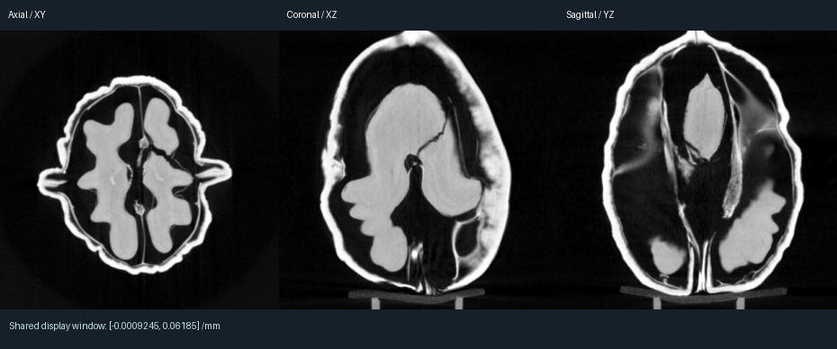

ConeFDK.
在笔记本上，看进一颗核桃
输入是围绕同一颗核桃拍下的 720 幅投影。重建器分批滤波、反投影，再把体数据分块写回磁盘。图中扫层动画取自这次重建，静态图展示三个正交断面。


三项数字，回答三个不同的问题
- 能否复现？
发行包附真实投影小样、命令行程序与校验和，可以先运行小样再下载全量数据。
- 和谁比较？
ASTRA 用于数值对照；速度对照用本工程旧版。两次比较不能互相替代。
- 显存不足怎么办？
另一次 1296³ 实验在 512 MiB 引擎设备缓冲预算下写出 8.71 GB 体数据。该预算不等于进程总显存。
金属里的每一个孔，都能回到原始切片复核吗？
- 先检查测量器
给定 NIST 发布的孔隙掩膜，CUDA 与独立 CPU 程序在三个钴铬试件的指定区域共核对 602 个连通体，孔隙体素计数差为零。这只验证计量，不验证自动找孔。
- 同一个位置，究竟有几个孔？
试件 3 的参考标注里，121 和 127 是两个孔。候选 C 把它们连成一个，体积比 121 号孔大了 47.3%。加入相邻切片后，候选 D 把它们分开，但体积仍分别低估了 6.08% 和 15.625%。
- 什么时候才算通过？
与 NIST 数字参考掩膜比较，预留试件 4、6 必须分别达到全部指标：孔隙率绝对偏差不超过 0.05 个百分点、相对偏差不超过 5%，还要通过重叠度、漏检、体积、等效直径与质心检查。目前三个开发试件都未通过；两个预留试件尚未评分。

两个孔分开了，尺寸还差多少？
参考体积为 296、128 个体素。候选 D 测得 278、108 个。图中四格都是第 455 层同一个 29 × 29 像素区域；颜色标记三维连通体，体积由全部切片计算。
放回整件看：候选 D 在试件 3 匹配到 27 个参考孔中的 25 个，但匹配孔的体积误差 P95 仍有 33.16%，目标为 15%。试件 2 的匹配数则从 71 降到 66。
切片来源：Kim 等 / NIST ↗换一种边界算法，同一个孔测准了吗？
候选 E 按局部纹理选取相似图像块，并在校准时给小孔边界加权。下面逐件比较两种算法：先看全部匹配孔，再看两种算法都找到的同一批孔。验收要求体积绝对相对误差的第 95 百分位（P95）不超过 15%；三个开发试件均未达标。
| 开发试件 | 匹配数（D → E） | 体积误差 P95（D → E） |
|---|---|---|
| 试件 2 | 66 → 67共 73 个参考孔 | 20.68% → 20.97% |
| 试件 3 | 25 → 24共 27 个参考孔 | 33.16% → 28.16% |
| 试件 5 | 10 → 11共 12 个参考孔 | 18.73% → 24.76% |
只比较两种算法都匹配到的孔
| 开发试件 | 共同匹配数 | 体积误差 P95（D → E） |
|---|---|---|
| 试件 2 | 66 个新增 1，丢失 0 | 20.68% → 15.98% |
| 试件 3 | 24 个新增 0，丢失 1 | 33.55% → 28.16% |
| 试件 5 | 10 个新增 1，丢失 0 | 18.73% → 18.61% |
新增和丢失的匹配没有放进这一行的百分位；它们仍计入正式验收的覆盖率。
再回到每件的 24 张校准切片：试件 2、3、5 分别只有 6、1、0 个体积在 64–127 体素之间、且没有被裁切的小孔。试件 5 并非没有孔，而是这段校准图像里没有可完整测量的该尺寸小孔。查看边界放宽、收紧的对照结果 ↗
用别的试件校准，小孔会量得更准吗？
每件另取 96 层作开发实验。先保存三件的原始预测，再用另外两件的完整孔估计边界应移动多少，最后对修正后的掩膜重新测量。下表只比较修正前后都找到的同一批小孔。这项修正没有同时通过三个试件的筛选，保留原算法。
| 目标试件 | 共同小孔 | 体积误差 P95：修正前 → 后 |
|---|---|---|
| 试件 2 | 8 个未通过 | 17.70% → 20.77% |
| 试件 3 | 5 个未通过 | 22.37% → 19.65% |
| 试件 5 | 2 个样本不足 | 19.42% → 20.37% |

离线阅片器能在没有参考标注时提示这种粘连。它在这三段切片中提示了这一个案例；规则是在看到案例后设计的。后面的新切片实验专门检验它是否认错了孔。
这批切片不替代上方正式开发区的评分。离线包能逐层对照原图、数字标注和两种掩膜，也能定位未匹配的预测。查看逐件结果和修正幅度的极限 ↗
换成卷积模型，同一个孔量得更准了吗？
候选 F 在每件原有的 24 张校准切片上训练，再用自写 CUDA 卷积处理正式区域的 128 张切片。试件 3 多找回一个参考孔，但三个试件的逐孔体积误差 P95 仍超过 15%。
| 开发试件 | F 匹配 / 参考 | 体积误差 P95：E → F |
|---|---|---|
| 试件 2 | 69 / 73通过 9 / 11 项 | 20.97% → 23.36% |
| 试件 3 | 25 / 27通过 5 / 11 项 | 28.16% → 27.66% |
| 试件 5 | 11 / 12通过 6 / 11 项 | 24.76% → 32.34% |
新切片推翻了自动拆孔的依据。另取每件的第 552–679 层，先封存预测再核对标注。在试件 2，算法漏掉了一个真正的粘连，却把原本匹配的 904 体素孔拆成 817 和 85 两块；小块没有对应的参考孔。试件 3、5 没有发生拆分。这个规则不进入正式测量。
保留试件 4、6 尚未用于确认。原图切片、逐孔表和失败案例均可离线复核。
先校正灰度，再找孔边界
候选 G 只用每件的 24 张校准切片学习灰度修正，再用固定的局部阈值划出孔。2 号仅差体积误差 P95，3 号却比 F 少匹配了 6 个孔。不能按试件挑表现最好的模型。
| 开发试件 | G 匹配 / 参考 | 体积误差 P95：F → G |
|---|---|---|
| 试件 2 | 69 / 73通过 10 / 11 项 | 23.36% → 17.04% |
| 试件 3 | 19 / 27通过 5 / 11 项 | 27.66% → 43.25% |
| 试件 5 | 10 / 12通过 5 / 11 项 | 32.34% → 23.86% |
从原始灰度和已封存权重重算，三件的 CPU 与 CUDA 在正式区域均给出完全相同的孔掩膜。3 号的量化中间图有 4 处数值不同，最终二值结果没有改变。算法仍未过关，4、6 号继续封存。
把去噪权重拟合得更细，也没有解决误差。2 号在拟合区的 Dice 从 0.91177 升到 0.92562，换到隔开的检查区却从 0.94405 降到 0.93890。三件试件的对照记录 ↗